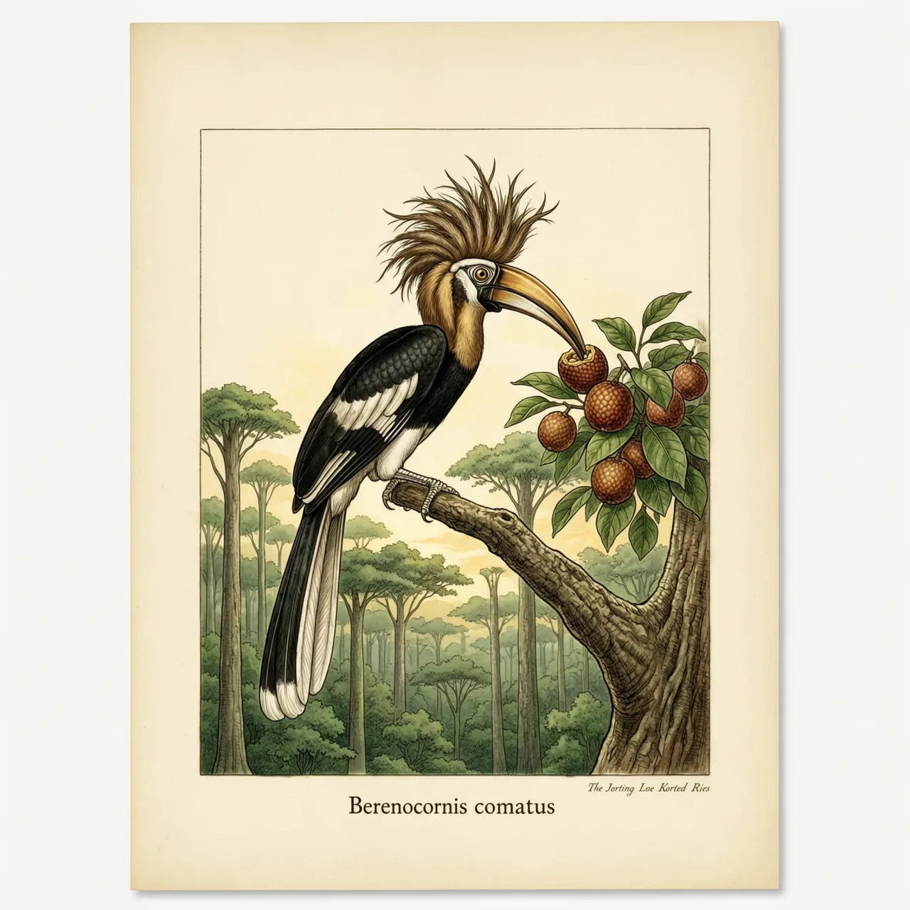
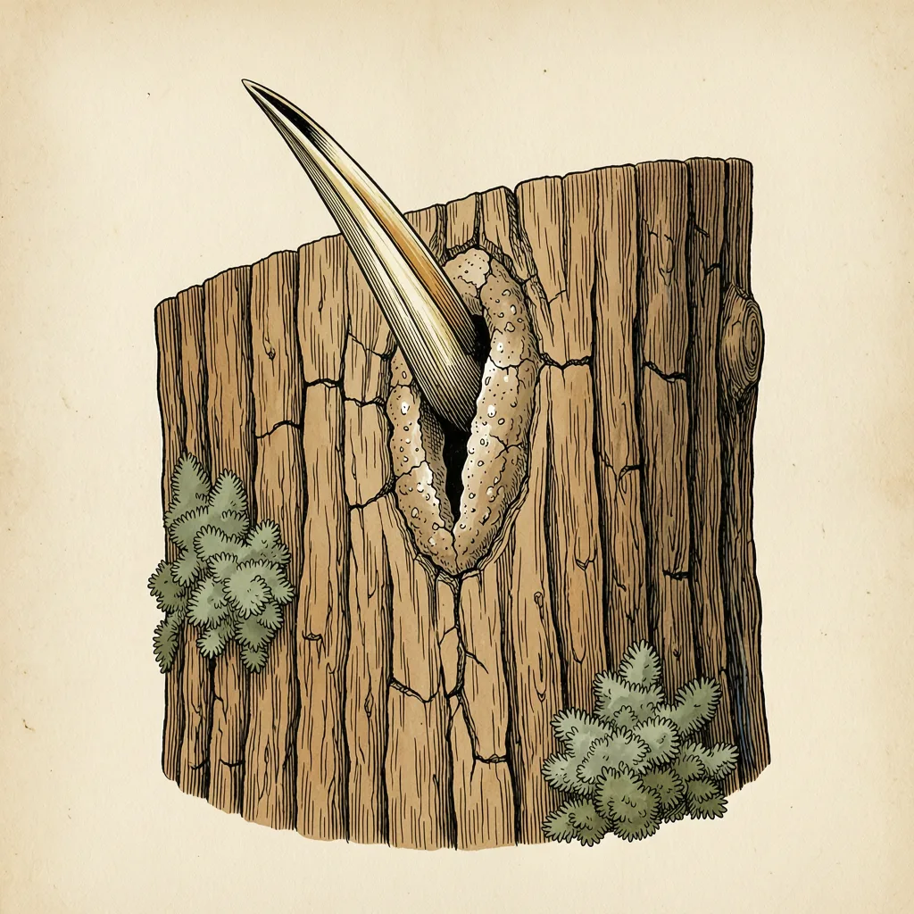

长冠犀鸟分布在马来半岛、苏门答腊及婆罗洲，是头顶蓬着一撮乱羽的犀鸟。它要把育儿所封进高大老树的树洞，老树一倒，雏鸟就无处落脚。IUCN把它列为濒危，CITES把它收入附录二，而它该算哪个属，学界至今没有定论。
低地雨林里树干还没被放倒的地方，长冠犀鸟才有一处落脚的树洞。它的分布横跨马来半岛、苏门答腊与婆罗洲，都在东洋界之内。高大老树的树洞是它唯一可用的巢位，所以它面对的威胁被写得极其简短：栖息地被破坏。林子一倒，先没的不是食物，是洞本身。
长冠犀鸟把育儿所封进高大老树的树洞：雌鸟退进洞里，洞口用泥糊住，只留一条窄缝，食物由雄鸟从缝里递进去，整个育雏期都卡在这条缝上。这套方式的进度很慢，一窝鸟的命运全系在一棵树上。伐木开进低地雨林时，被挑走的恰恰是最高最老、带着洞的那批树，巢树比鸟先没。长冠犀鸟因此被列为濒危，《濒危野生动植物种国际贸易公约》把它放进附录二，限制出口与贸易。
长冠犀鸟在1822年由Raffles命名，可两个世纪过去，学界还没定清它该算哪个属。按GBIF目前的分类，Berenicornis是单型属，里面只有它一种；有学者主张把白冠弯嘴犀鸟并进来，也有学者认为连这个属都不必存在，直接把长冠犀鸟归进皱盔犀鸟属。旧文献里它常被记作Aceros comatus，那是上一回搬家留下的名字。
